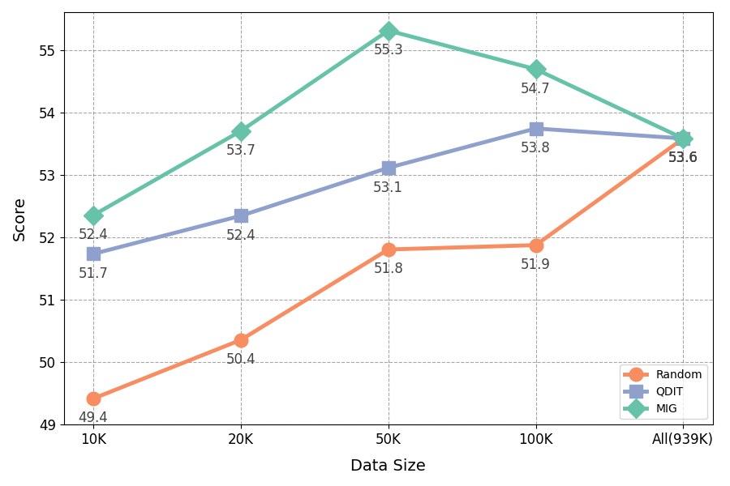

Performance
Highlight Results of MIG

MIG outperforms random selection and previous state-of-the-art method on knowledge-based(six benchmarks) and human-preference(three benchmarks) evaluations.
Full Results on Tull3

Comparison with data selection methods on the Tulu3 pool based on different base models. HE denotes HumanEval, AE denotes AlpacaEvalv2, MT denotes MTBench, and Wild denotes WildBench. Avgobj
Data Scaling
MIG consistently delivers superior performance at each data budget, demonstrating its robust scalability. Remarkably, MIG achieves comparable performance to the full Tulu3 pool with only 20K samples.